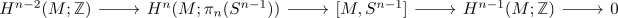
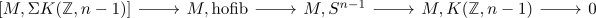

exact sequence of n-1 cohomotopy of a connected closed manifold
Proposition
Let $m$ be a connected closed \(n\)-dimensional topological manifold with $n \geq 2$ Then there exists an exact sequence

Proof
$n = 2$
Then
\begin{align*}
S^1 = S^{n-1} = K(\mathbb{Z},1)
\end{align*}
is an Eilenberg-MacLane space (cf. circle as Eilenberg-MacLane Space)
hence this sequence evaluates to
\begin{displaymath}
\begin{tikzcd}
H^{0}(M,\mathbb{Z}) \rar & 0 \rar & [M,K(\mathbb{Z},1)] \rar & H^{1}(M;\mathbb{Z}) \rar & 0
\end{tikzcd}
\end{displaymath}$n \geq 3$
Note that by <???>
\begin{align*}
[M, S^{n-1}] \rightarrow [M, K(\mathbb{Z}, n-1)]
\end{align*}
is a bijection
Then using the puppe sequence
